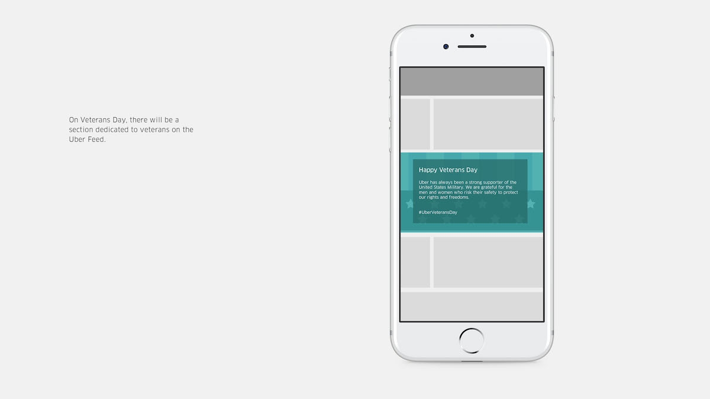
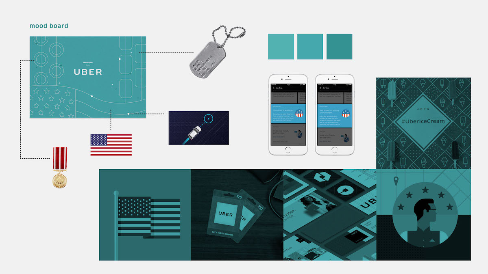
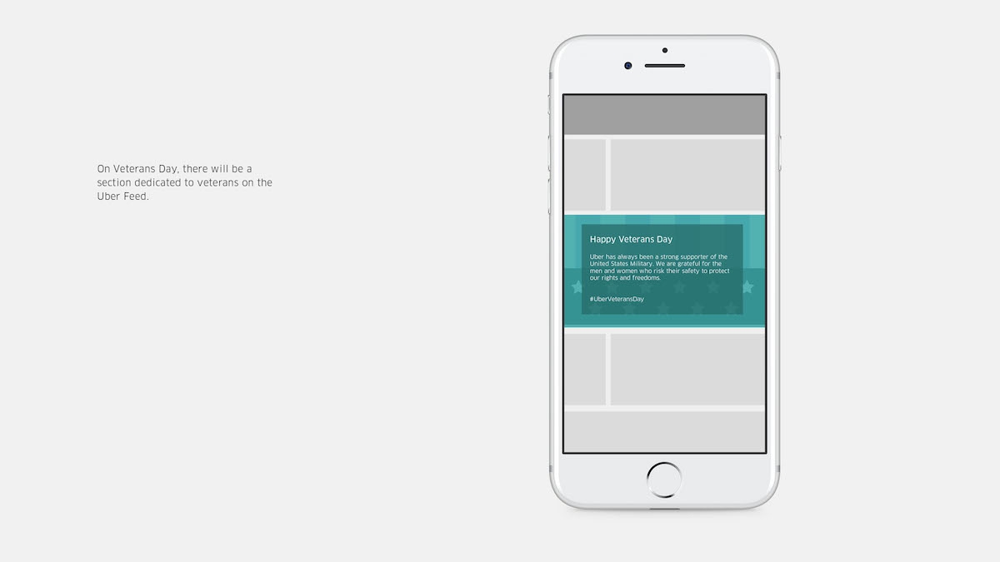
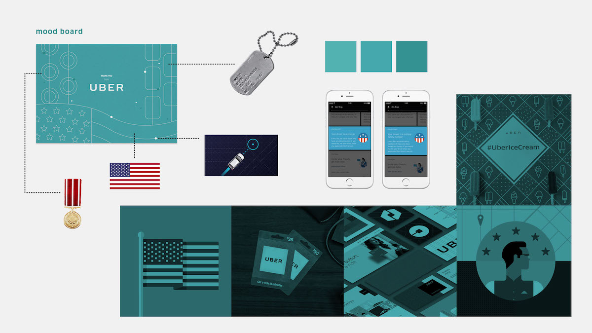

UBER VETERANS
This poster was inspired by Joost Schmidt's exhibition poster for Bauhaus in 1923. Schmidt's poster displays the school's emphasis on new typography and reinvention of the traditional approach; as it can be seen through the geometric shapes and limited colors. Based on the same concept and design elements (with a modern twist), I designed a poster that showcases the school's achievements in the design and architecture world.
Deliverable


 


